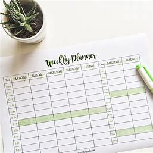

Tips to know for college freshmen students
Learn about your teachers
Professors are the gatekeepers to a successful career. For instance, asking for help with class material increases the chances of doing well on exams and receiving higher grades.
Professors, on the other hand, might be able to give you part-time work as part of research collaboration, and you can learn useful skills and information from them that aren't taught in class. Local employers often contact professors in search of talented students to hire after graduation.
When those employers call, you'll be more likely to come to mind if you get to know your professor. Professors would almost certainly write letters of recommendation for you. You'll need glowing letters of recommendation from your professors as part of your application kit if you're thinking about going to medical school, law school, or even any graduate school.
Actively cultivate the practice of planning ahead
I grant myself permission to take a breather. If nothing on Netflix appeals to me, I pick up my textbook instead.
Getting a jump on work means less tension and higher-quality results. When I put off doing my job, I'm more likely to have several tasks vying for my attention at the same time.
And, in the event of an emergency, I'll be able to deal with it without fear of losing my grades.
Look for your advisor
Don't be shy if I'm having difficulties with my coursework. Make contact with your adviser to schedule a meeting. They are the most knowledgeable about campus services and will advise you on tutoring centers, blogs, learning strategies, and other professional resources to help you excel in your studies.
Make a weekly plan
Schedules are important for keeping on track and fulfilling all of my responsibilities. The best part about schedules is that they are self-sustaining. It's a lot easier for me just to stick to my schedule, get stuff done, and keep going once I've developed the habit.
Get a study buddy
Making friends with your classmates is beneficial for a variety of reasons. You'll have someone to depend on if you're sick and need someone to take notes for you.
You can also cross-reference your notes to obtain a better understanding of the content when it comes time to prepare for exams. Finally, communicating a topic to a friend who understands the subject better than you has been shown to help you learn the material even better than learning it alone.
Know what makes you procrastinate

Knowing your procrastination causes and avoiding them is another way to help you concentrate on your research. If your BFF normally texts you in the evening but you have a major paper due the next day, tell them you'll be studying and setting up a time to catch up later.
Start reading a few days ahead of time and work your way through it. Give some thought about what is keeping you from studying and search for workarounds to keep you focused.
Find a favorite study nook
Finding a favorite research nook is another way to get the most out of your studying time. Some people prefer to be in a crowded central building with plenty of chances to talk with friends and take a break. Others need the complete silence and isolation of the library stacks in order to concentrate. Find out how you work best and look for a place where you can work whenever you need to.
Make the decisions you want to
Read books you've never read before. Prioritize the time as though it were a limited resource. Spend it on the things you want to do. College is a time for you to believe in yourself and redefine yourself. Make the most of your time when you have it.
Stay positive
College is a significant transition. Classes are more difficult. You're completely on your own. Your surroundings are unfamiliar to you. Your circle of friends is special. It's possible that your parents are a long way away. In order to improve your emotional intelligence, you must first learn to develop resilience. It's a talent that will serve you well in your life.
If you're having trouble remaining optimistic, turn to friends, a counselor, or even an online outlet that speaks to you and encourages you. Do whatever it takes to maintain a good attitude and continue working for your degree. In the long term, it will pay off.